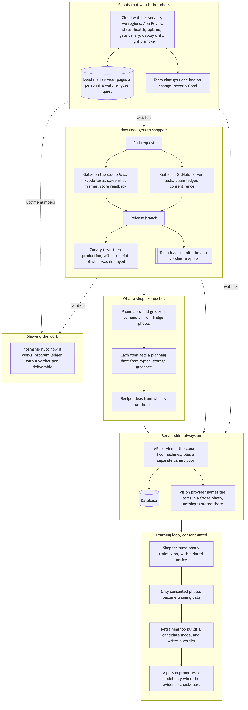
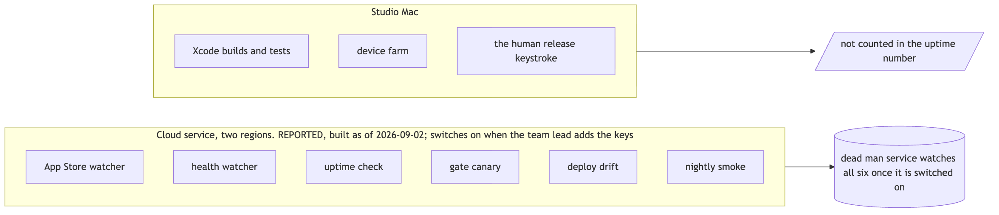
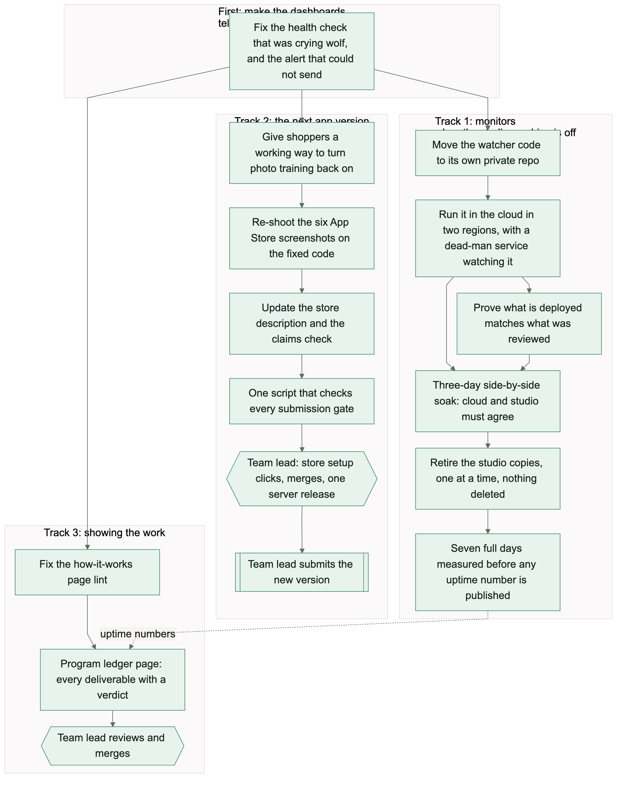

The system in pictures
The diagrams posted to the intern channel on 2026-09-02, kept here with their sources, plus the draft running order for the 9/10 presentation.
How to read this page
Each picture was reviewed against the system it describes before it was posted. A VERIFIED chip means the picture matched the shipped system on 2026-09-02, the day it was posted to the intern channel, backed by a public link a reader can open and check; the caption says so in the past tense on purpose, because the system keeps moving. PLANNED marks the presentation section: a draft running order, not a finished deck. Every picture also ships its Mermaid source so anyone can re-render or fix it instead of redrawing from a screenshot.
The three posted diagrams
Posted to the 2026 intern channel on 2026-09-02 with the walkthrough text quoted under each picture.

Read it in order: the watchers keep an eye on everything; then how a pull request becomes a release; the shopper's app talks to the server; and the learning loop only ever uses photos a shopper explicitly opted in, which a person checks before any model is promoted.
Mermaid source (system-map.mmd)
flowchart TB
subgraph SHOPPER["What a shopper touches"]
direction TB
A1[iPhone app: add groceries by hand or from fridge photos]
A2[Each item gets a planning date from typical storage guidance]
A3[Recipe ideas from what is on the list]
A1 --> A2 --> A3
end
subgraph BACKEND["Server side, always on"]
direction TB
B1[API service in the cloud, two machines, plus a separate canary copy]
B2[(Database)]
B3[Vision provider names the items in a fridge photo, nothing is stored there]
B1 --> B2
B1 --> B3
end
subgraph LEARN["Learning loop, consent gated"]
direction TB
L1[Shopper turns photo training on, with a dated notice]
L2[Only consented photos become training data]
L3[Retraining job builds a candidate model and writes a verdict]
L4[A person promotes a model only when the evidence checks pass]
L1 --> L2 --> L3 --> L4
end
subgraph SHIP["How code gets to shoppers"]
direction TB
S1[Pull request]
S2[Gates on the studio Mac: Xcode tests, screenshot frames, store readback]
S3[Gates on GitHub: server tests, claim ledger, consent fence]
S4[Release branch]
S5[Canary first, then production, with a receipt of what was deployed]
S6[[Team lead submits the app version to Apple]]
S1 --> S2 --> S4
S1 --> S3 --> S4
S4 --> S5
S4 --> S6
end
subgraph WATCH["Robots that watch the robots"]
direction TB
W1[Cloud watcher service, two regions: App Review state, health, uptime, gate canary, deploy drift, nightly smoke]
W2[(Dead man service: pages a person if a watcher goes quiet)]
W3[Team chat gets one line on change, never a flood]
W1 --> W2
W1 --> W3
end
subgraph SHOW["Showing the work"]
direction TB
H1[Internship hub: how it works, program ledger with a verdict per deliverable]
end
SHOPPER --> BACKEND
BACKEND --> LEARN
SHIP --> BACKEND
SHIP --> SHOPPER
WATCH -. watches .-> BACKEND
WATCH -. watches .-> SHIP
WATCH -. uptime numbers .-> SHOW
SHIP -. verdicts .-> SHOW

Where the automated checks run. Written on 2026-09-02, when the cloud watcher service had just been built: it switches on once the team lead adds its keys, and from then on a separate dead-man service pages a person if any watcher goes quiet. Steps that need Xcode or the studio computer only happen when a person is there, so they are not counted in the uptime number.
Mermaid source (where-robots-run.mmd)
flowchart LR
subgraph CLOUD["Cloud service, two regions. Built this week; switches on when the team lead adds the keys"]
direction TB
C1[App Store watcher]
C2[health watcher]
C3[uptime check]
C4[gate canary]
C5[deploy drift]
C6[nightly smoke]
end
DM[(dead man service watches all six once it is switched on)]
CLOUD --> DM
subgraph STUDIO["Studio Mac"]
direction TB
S1[Xcode builds and tests]
S2[device farm]
S3[the human release keystroke]
end
NOTE[/not counted in the uptime number/]
STUDIO --> NOTE

The order of work for that week, in three lanes that ran at the same time. Boxes are steps, arrows show what had to finish before the next step could start, and the diamond shapes are the team lead's decisions.
Mermaid source (plan-order.mmd)
flowchart LR
subgraph T0[First: make the dashboards tell the truth]
H0[Fix the health check that was crying wolf, and the alert that could not send]
end
subgraph T1[Track 1: monitors that run when the studio machine is off]
O1[Move the watcher code to its own private repo] --> O2[Run it in the cloud in two regions, with a dead-man service watching it]
O2 --> O3[Prove what is deployed matches what was reviewed]
O2 --> S1([Three-day side-by-side soak: cloud and studio must agree])
O3 --> S1
S1 --> C1[Retire the studio copies, one at a time, nothing deleted]
C1 --> W7([Seven full days measured before any uptime number is published])
end
subgraph T2[Track 2: the next app version]
B1[Give shoppers a working way to turn photo training back on] --> P1[Re-shoot the six App Store screenshots on the fixed code]
P1 --> P2[Update the store description and the claims check]
P2 --> G1[One script that checks every submission gate]
G1 --> OWN1{{Team lead: store setup clicks, merges, one server release}}
OWN1 --> SUB[[Team lead submits the new version]]
end
subgraph T3[Track 3: showing the work]
U1[Fix the how-it-works page lint] --> U2[Program ledger page: every deliverable with a verdict]
U2 --> OWN2{{Team lead reviews and merges}}
end
H0 --> O1
H0 --> B1
H0 --> U1
W7 -. uptime numbers .-> U2
The 9/10 presentation
A draft running order for the September 10 talk, built entirely from pictures and pages that already exist and have been checked. The talk's title, length, and audience are the team lead's open decisions; this section grows as those firm up. Nothing here invents a claim: each step names where its picture comes from.
- Open on the system mapOne picture of the whole machine: what a shopper touches, the server side, the consent-gated learning loop, and how code reaches shoppers. Five boxes, one minute each. Source: diagram 1 above.
- Who watches the robotsThe reliability story: six cloud watchers, a dead-man service that pages a person when one goes quiet, and the honest boundary that studio-Mac steps never count in the uptime number. Source: diagram 2 above.
- How a week of work is sequencedThree lanes in parallel, with the team lead's decisions drawn as diamonds - the shape of the program, not just its output. Source: diagram 3 above.
- Deep-dive backup: a day of a changeIf the room wants detail, walk one change from branch to merged release. Source: A day of a change.
- Deep-dive backup: the automation inventoryEvery automation with its job, its boundary, and its status chip. Source: The automation inventory.
- Deep-dive backup: the ML loopHow a consented photo becomes training data and why a person, not a schedule, promotes a model. Source: The ML loop today.
- Close on the ground truthsWhat the program promises, and the evidence each promise stands on. Source: Ground truths.
Talk title, talk length, audience, and whether a live demo joins the slides. The recipe-capability picture also changes when 4.3.6 ships (fridge-confirmed rows join recipes under typical guidance), so any screenshot for this deck should be captured after that release, not before.